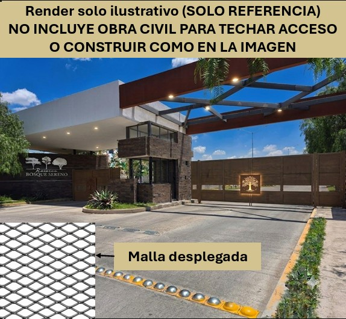
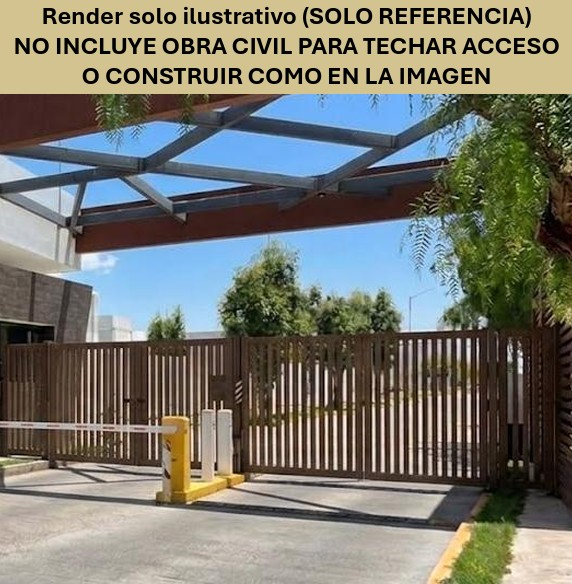
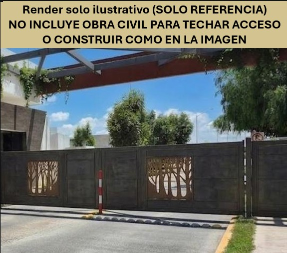

🚧 Opciones de Portón
Elige la opción que más te convence para la encuesta
Elige la opción que más te convence para la encuesta
Como parte de la propuesta para renovar el portón de acceso al condominio, se presentan 3 opciones para que la comunidad las conozca antes de participar en la encuesta de votación. Revisa las imágenes de cada opción y elige la que prefieras al momento de votar.

Ver detalle Toca para ver el detalleDiseño, fabricación y montaje de sistema de herrería estructural para el control de acceso vehicular y peatonal. El proyecto se enfoca en el blindaje de áreas vulnerables y la conexión del sistema de identificación biométrica ya existente para maximizar la seguridad del residencial.
⚠️ Render solo ilustrativo (SOLO REFERENCIA). No incluye obra civil para techar el acceso ni construir como en la imagen.

Ver detalle Toca para ver el detalleDiseño jerarquizado que destaca por andador peatonal independiente con marco de acero, herrajes de seguridad y listones de perfil de acero de 4" x 1.5" colocados de manera vertical (R400).

Ver detalle Toca para ver el detalleDiseño, fabricación y montaje de sistema de herrería estructural para el control de acceso vehicular y peatonal.